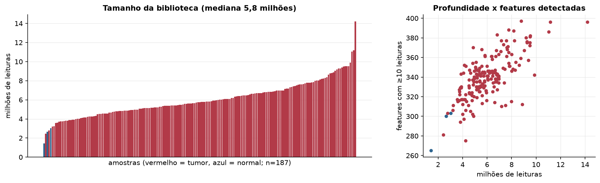
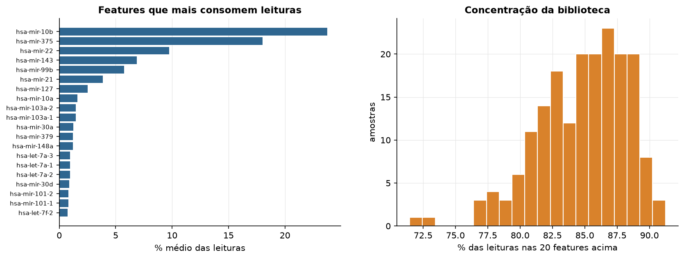
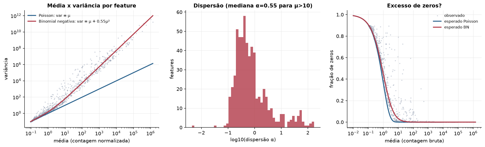
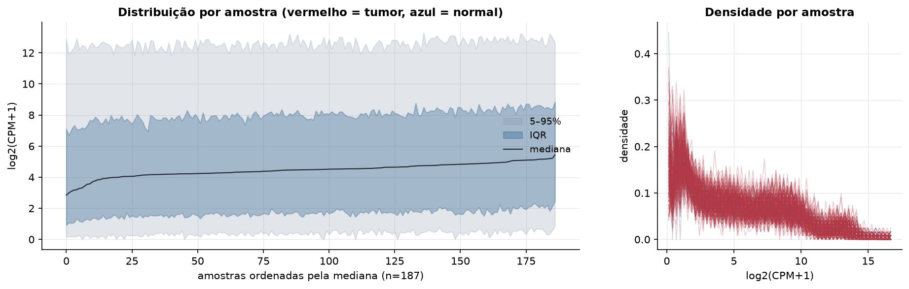
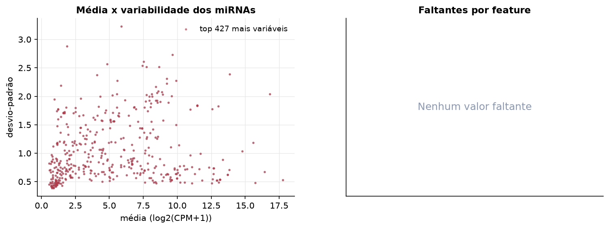
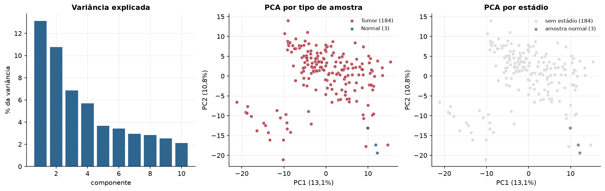
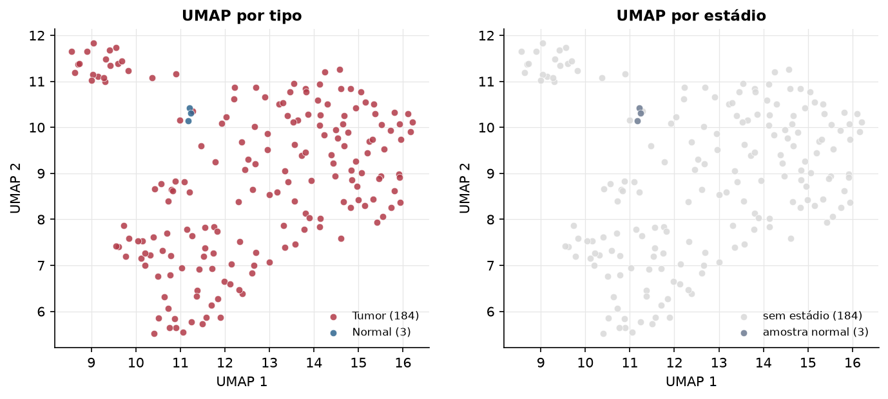
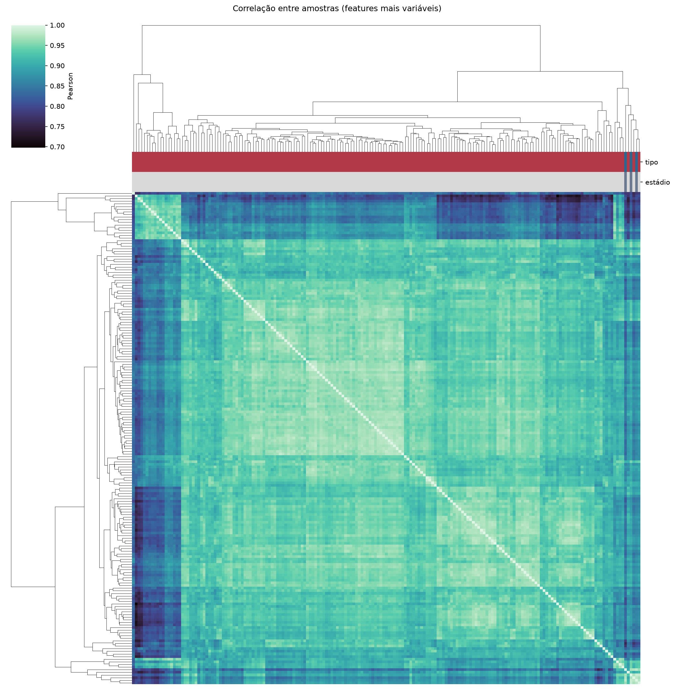
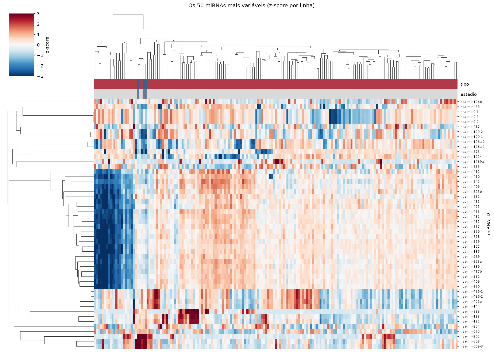
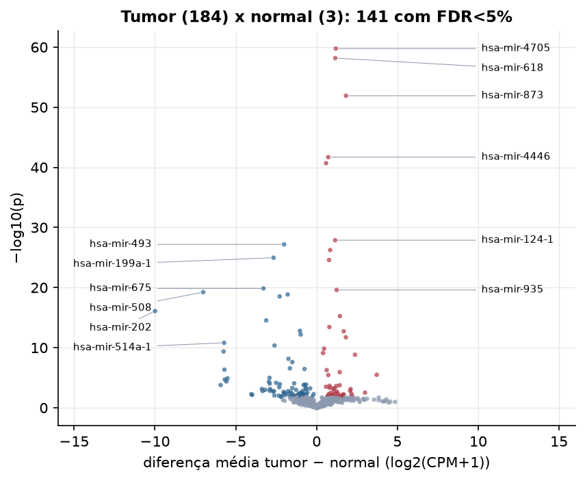

PCPG · miRNA-seq: contagens brutas (GDC)
BCGSC miRNA Profiling (miRBase v21) · gerado em 22/10/2026 02:46
5,8 Mtamanho mediano
0,55dispersão mediana α
427miRNAs
184amostras tumorais
3amostras normais
0,0%valores faltantes
Fonte: API do GDC (BCGSC miRNA Profiling)
Principais resultados
- Bibliotecas de 1,4 a 14,2 milhões de leituras (mediana 5,8). 995 de 1.881 features têm leitura em pelo menos 10% das amostras.
- A variância cresce bem acima da média: a dispersão mediana da binomial negativa é α=0.55 (para features com média > 10). Isso descarta um modelo Poisson e indica binomial negativa (ou Poisson-lognormal) na verossimilhança.
- A fração de zeros é compatível com a binomial negativa (diferença mediana -0,0%); inflação de zeros não parece necessária.
- Em média 85,4% das leituras de cada amostra vão para as 20 features mais abundantes.
- 427 miRNAs medidos em 187 amostras (184 tumorais e 3 normais); 0,0% dos valores estão faltando.
- Os dois primeiros componentes principais explicam 13,1% e 10,8% da variância das features mais variáveis.
- Correlação mediana entre amostras: 0,93.
- Amostras com correlação muito abaixo das demais (possíveis outliers técnicos): TCGA-PR-A5PH-01, TCGA-QR-A6GY-01, TCGA-QT-A5XP-01, TCGA-RW-A67V-01, TCGA-QT-A5XJ-01, TCGA-QR-A70H-01, TCGA-S7-A7WR-01, TCGA-SR-A6MS-01, TCGA-SQ-A6I4-11, TCGA-WB-A80M-01.
- Tumor x normal: 141 miRNAs diferentes com FDR < 5% (56 maiores no tumor, 85 maiores no normal; 3 pacientes têm o par tumor-normal).
- Mais aumentados no tumor: hsa-mir-4705, hsa-mir-618, hsa-mir-873, hsa-mir-4446, hsa-mir-2681, hsa-mir-124-1, hsa-mir-216a, hsa-mir-3929.
- Mais reduzidos no tumor: hsa-mir-493, hsa-mir-199a-1, hsa-mir-675, hsa-mir-508, hsa-mir-28, hsa-mir-708, hsa-mir-202, hsa-mir-148a.
- Associações clínicas com p < 0,05 nos componentes principais: PC3 com idade (p=0.037).
Biblioteca


Sobredispersão e zeros

Exploração em log2(CPM+1)
Features com CPM ≥ 1 em pelo menos 20% das amostras (427 features).
Distribuição dos valores


Estrutura das amostras




Tumor x normal

Features mais diferentes entre tumor e normal
| miRNA_ID | diferenca_tumor_menos_normal | t | p | fdr |
|---|---|---|---|---|
| hsa-mir-4705 | 1.186 | 24.824 | 1.76e-60 | 7.51e-58 |
| hsa-mir-618 | 1.153 | 24.188 | 6.75e-59 | 1.44e-56 |
| hsa-mir-873 | 1.818 | 21.755 | 1.23e-52 | 1.75e-50 |
| hsa-mir-4446 | 0.714 | 18.023 | 2.03e-42 | 2.16e-40 |
| hsa-mir-2681 | 0.587 | 17.669 | 2.04e-41 | 1.75e-39 |
| hsa-mir-124-1 | 1.143 | 13.274 | 1.33e-28 | 9.43e-27 |
| hsa-mir-493 | -2.011 | -15.529 | 6.66e-28 | 4.06e-26 |
| hsa-mir-216a | 0.839 | 12.717 | 5.87e-27 | 3.13e-25 |
| hsa-mir-199a-1 | -2.664 | -25.623 | 1.09e-25 | 5.17e-24 |
| hsa-mir-3929 | 0.77 | 12.156 | 2.62e-25 | 1.12e-23 |
| hsa-mir-675 | -3.289 | -12.848 | 1.4e-20 | 5.42e-19 |
| hsa-mir-935 | 1.236 | 10.444 | 2.51e-20 | 8.94e-19 |
| hsa-mir-508 | -7.015 | -35.716 | 5.77e-20 | 1.89e-18 |
| hsa-mir-28 | -1.79 | -32.699 | 1.42e-19 | 4.32e-18 |
| hsa-mir-708 | -2.287 | -16.218 | 2.99e-19 | 8.5e-18 |
| hsa-mir-202 | -9.994 | -41.576 | 8.22e-17 | 2.19e-15 |
| hsa-mir-1269a | 1.44 | 8.891 | 5.7e-16 | 1.43e-14 |
| hsa-mir-148a | -3.117 | -20.262 | 2.89e-15 | 6.85e-14 |
| hsa-mir-1185-2 | 0.789 | 10.687 | 3.73e-14 | 8.37e-13 |
| hsa-mir-654 | -1.033 | -7.972 | 1.57e-13 | 3.35e-12 |
| hsa-mir-1251 | 1.677 | 11.569 | 1.9e-13 | 3.87e-12 |
| hsa-mir-676 | -0.987 | -15.483 | 6.57e-13 | 1.28e-11 |
| hsa-mir-668 | 1.81 | 12.633 | 1.87e-12 | 3.48e-11 |
| hsa-mir-514a-1 | -5.722 | -36.774 | 1.55e-11 | 2.76e-10 |
| hsa-mir-199a-2 | -2.606 | -21.913 | 4.29e-11 | 7.33e-10 |
| hsa-mir-5187 | 0.466 | 11.078 | 1.47e-10 | 2.41e-09 |
| hsa-mir-514a-3 | -5.756 | -35.42 | 4.28e-10 | 6.78e-09 |
| hsa-mir-1343 | 0.398 | 8.209 | 7.64e-10 | 1.17e-08 |
| hsa-mir-149 | 2.377 | 16.212 | 1.51e-09 | 2.22e-08 |
| hsa-let-7b | -1.745 | -23.33 | 7.09e-09 | 1.01e-07 |
Associação com variáveis clínicas
p-valores da associação dos três primeiros componentes principais (só tumores) com estádio (Kruskal-Wallis), sexo (Mann-Whitney), idade (Spearman) e sobrevida global (Cox univariado).
| estádio (Kruskal) | sexo (Mann-Whitney) | idade (Spearman) | sobrevida OS (Cox) | |
|---|---|---|---|---|
| PC1 (13,2%) | 0.356 | 0.071 | 0.148 | |
| PC2 (10,1%) | 0.433 | 0.926 | 0.697 | |
| PC3 (6,8%) | 0.22 | 0.037 | 0.275 |